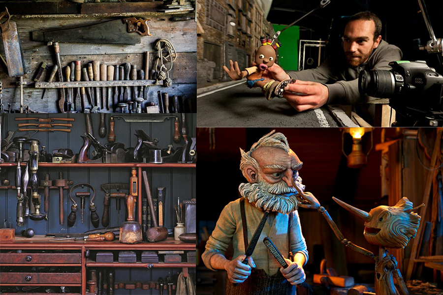

PROTO-PERSONAS
Ignacia(23)
Participa en Talleres Pequeños, con la ed.Media completa, tiene las ganas de hacer animación y se está formando para ello, vive con una amiga en un departamento en Santiago centro, es ´movida´con ganas de hacer constantemente, le gusta aprender técnicas nuevas para fabricar y conocer gente.
Busca ver un compañero con el que pueda aprender y que muestre sus habilidades, probablemente no vea muchos portafolios en su día y tenga el tiempo de revisarlo con detención.
Cecilia(38)
Trabaja en una Productora Chilena, ya ha participado en la producción de varias obras, estudió en un CFT y trabaja con su pareja, con la que vive en un departamento en Providencia, siempre ha querido dedicarse a hacer animación y está muy feliz de trabajar en esto, no lo cambiaría por nada.
Busca a alguien que tenga ánimos de crear, que tenga experiencia en el trabajo con distintos materiales y sepa trabajar en equipo, suele ver portafolios habitualmente así que busca algo que destaque y no sea muy extenso en su explicación.
Guillermo(55)
Trabaja para una Productora Internacional, vive con su esposa y uno de sus 3 hijos en una casa en California pero no suele estar allí ya que viaja constantemente y le dedica la mayor parte del tiempo a su trabajo, ha pasado por distintas escuelas y comprende el medio en su totalidad, siempre prioriza su trabajo y no le gusta perder su tiempo nunca.
Casi no tiene tiempo, busca que el contenido vaya al grano ya que ve muchos portafolios al día, por lo mismo busca algo que se diferencie de la mayoría.
MOODBOARD
COLORES
La paleta se basa en un contraste de luminosidad, en ella que predominan los colores calidos ligados a la madera y el trabajo artesanal, además incorporé colores complementarios que sirvan de acento para elementos en los que quiera poner enfasis.
TIPOGRAFÍAS
Vollkorn SC
Tipografía Serif modesta y tranquila, calida en concordancia con el estilo escogido. Pienso usarla para titulos en su variante Bold.
Vollkorn
Tipografía Serif modesta y tranquila, calida al igual que Vollkorn SC. Pienso usarla para subtitulos y texto secundario en su variante Regular Italic, y para cuerpos de texto en su variante Regular.